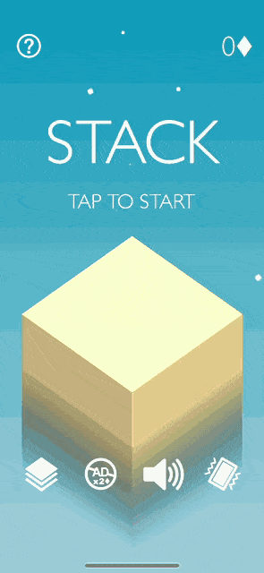

Воробьёв К.А, группа 1304
на тему:
Выполнил: студент группы 1304 Воробьёв К.А.
Научный руководитель: Киселёв Леонид Александрович
Данная работа посвящена разработке двухмерной компьютерной игры «HyperCasual» на движке Unity3D. Проект относится к жанру казуальных игр. Казуальная игра (от англ. casual game) — компьютерная игра, предназначенная для широкого круга пользователей. Казуальные игры отличаются простыми правилами и не требуют от пользователя усидчивости, затрат времени на обучение или каких-либо особых навыков.
компьютерная программа, служащая для организации игрового процесса (далее геймплея), связи с партнёрами по игре, или сама выступающая в качестве партнёра.
Основные составляющие видео игры - это Сеттинг - место действия, условия, время, среда, Геймплей - интерактивное взаимодействие игры и игрока и Музыкальное сопровождение - мелодии, композиции, саундреки, мелкие звуки окружающего мира, взаимодействия и т.д.